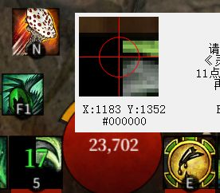
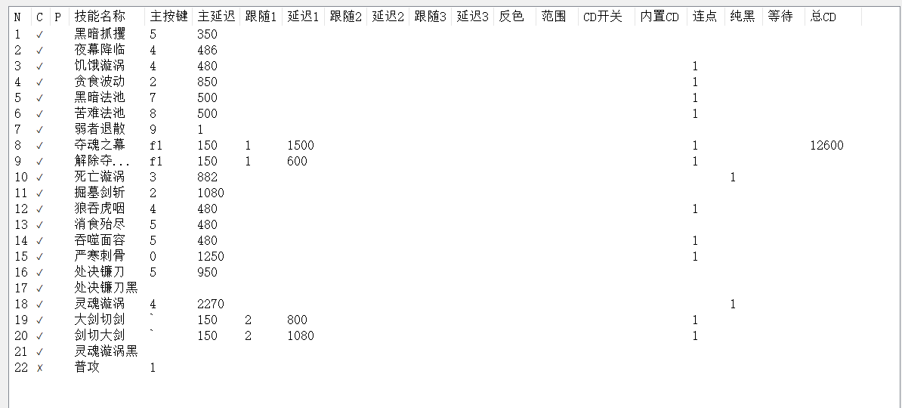
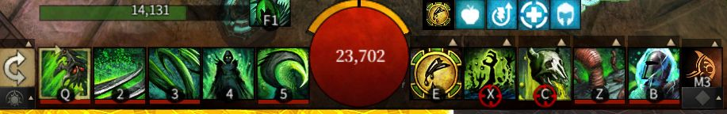
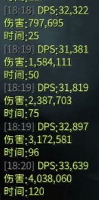

碎层专用直伤夺魂，大剑、剑剑
黑暗抓攫，夜幕降临，饥饿漩涡，贪食波动，黑暗法池，苦难法池，弱者退散，夺魂之幕，夺魂之幕>11600=解除夺魂之幕|死亡漩涡，黑暗抓攫，夜幕降临，掘墓剑斩，黑暗法池，苦难法池，饥饿漩涡，狼吞虎咽，贪食波动，消食殆尽，吞噬面容，弱者退散，严寒刺骨，夺魂之幕，处决镰刀，夺魂之幕>>4000=处决镰刀黑=灵魂漩涡，夺魂之幕>11600=解除夺魂之幕，掘墓剑斩=1=大剑切剑，贪食波动=1=剑切大剑，灵魂漩涡黑=普攻||
黑暗抓攫,5,350|夜幕降临,4,486|饥饿漩涡,4,480,,,,,,,,,,,,,,,,,触发,0,,1|贪食波动,2,850,,,,,,,,,,,,,,,,,触发,0,,1|黑暗法池,7,500,,,,,,,,,,,,,,,,,触发,0,,1|苦难法池,8,500,,,,,,,,,,,,,,,,,触发,0,,1|弱者退散,9,1|夺魂之幕,f1,150,1,1500,,,,,,,,,,,,,,,触发,0,,1,,,12600|解除夺魂之幕,f1,150,1,600,,,,,,,,,,,,,,,触发,0,,1|死亡漩涡,3,882,,,,,,,,,,b|掘墓剑斩,2,1080|狼吞虎咽,4,480,,,,,,,,,,,,,,,,,触发,0,,1|消食殆尽,5,480|吞噬面容,5,480,,,,,,,,,,,,,,,,,触发,0,,1|严寒刺骨,0,1250,,,,,,,,,,,,,,,,,触发,0,,1|处决镰刀,5,950|处决镰刀黑|灵魂漩涡,4,2270,,,,,,,,,,b|大剑切剑,`,150,2,800,,,,,,,,,,,,,,,触发,0,,1|剑切大剑,`,150,2,1080,,,,,,,,,,,,,,,触发,0,,1|灵魂漩涡黑|普攻,1
[&DQg1KTIlIjbBEigPQAFAAYEAgQDxEvESAxOVAAAAAAAAAAAAAAAAAAAAAAACWgAyAAA=]
狂战套 学者/猎龙 大剑、剑剑、武勇，精确，烟花
相比其他职业，夺魂还是安逸很多，新版相对之前的循环改善了不少问题，全局延迟为0.85，如果卡手改 0.9-1
取色方面有几点要注意
1，帷幕4，跟帷幕5 要取图标中心的颜色。

2，处决镰刀黑，跟灵魂漩涡黑，是用来避免被打断，取图标12点左侧黑色就行，如图。
3，进入帷幕加入了12600的计时，用来判断 夺魂之幕>>4000=处决镰刀黑=灵魂漩涡，避免在帷幕4转圈时计时结束提前切出去了。
必须等帷幕F1剩余时间大于4秒才转圈。
4，剑4，剑5，采用的是两段取色，并采用连续点击模式，随缘使用第二段，如果强制连续使用第二段，输出反而低500左右，不用过于在意是否按出剑45的二段。
5，如果转阶段，可采用手动关闭f1，重新开启循环，或者交给工具自己判断，f1使用后，会本地记录剩余cd，如果进入f1时间超过13秒，起手也会自动退出。


起手直接大剑起手，不毛伤害如图，0灌，1蛋糕

评论列表（45）
还有没提升优化的空间啊？我全身+13灌注吃了食物扳手只能打36.6k，也试过看日志循环改了一些顺序，但是结果基本没变，B站那个卖宏的怎么就打了39k气死我了，我0.5倍速看了他好几天了，他法池有时候都卡没按出来居然还能打39k，我无法理解不能接受，大佬能不能救救我
@林北 上+16灌注....
@林北 隔壁视频一般都是夸大的，很多是用+16测的告诉你标准，而且隔壁有一些是用内存识别，效率比取色高很多，自然高。
@melis 我昨晚从10点鼓捣到3点多，最后放弃了早上8点起来又去鼓捣大剑长矛夺魂了
@林北 直接对比sc，循环接近sc打桩的90%就算正常
@melis 我刚刚6点吃完饭又鼓捣大剑长矛的循环到现在，我严重怀疑sc的伤害是假的，我按日志里的循环写了半天，连帷幕里的普攻次数我都调的一样了，可以说前面一半的循环是一模一样，后面一半因为那几个法池基本属于好了就按的影响会有一点偏差但是我觉得对伤害影响不大吧？夺魂主要的伤害来源都在帷幕里，帷幕外的技能都是好了就按以及触发古物buff的，我也看了烟花buff也几乎都覆盖了，但是循环打完和你那套大剑长矛的差不多，你那套没用帷幕2我是按sc的放帷幕2穿插完整3下普攻，结果总伤没差
@林北 老哥，你是不是打开方式不对啊，我发个简易夺魂你看看
@优雅之殇 我看到了，明天去试试，我现在各种切武器都没打的比你发的那个视频里打的多😓
有几个问题想咨询一下：
1.为什么切武器的判定要用武器2释放一次作为判定条件
2.“夺魂之慕>11600=解除夺魂之墓”的意思是夺魂之墓持续11600ms判定解除夺魂之墓吗？那“夺魂之墓>>4000=处决镰刀黑=灵魂旋涡”里面的“>>”是什么意思？
3.进帷幕先普攻再释放处决镰刀最后放灵魂旋涡这个循环我可不可调整一下释放顺序，调成丢完法池进帷幕先丢灵魂旋涡再放处决镰刀最后再普攻？循环是不是就是改成“夺魂之墓，夺魂之墓>>4000=灵魂旋涡，处决镰刀，普攻，夺魂之墓>11600=解除夺魂之墓”
@11 >>是指，夺魂F1的剩余cd时间大于4秒，夺魂f1是可以指定技能cd，防止你夺魂F1剩余1秒的时候，放帷幕4，导致直接被退出F1，你不加也是一样的，用武器2作为切武器判断是因为武器2技能cd是最快的。
“>>”是什么意思啊
大佬，为什么那两个法池的延迟要设500啊？我看技能介绍只要1/4秒不是只要设250就行了吗？
@林北 游戏里那个延迟不准的，没有记录游戏施法动画，而那个动画游戏里是无法显示，所以需要用dps插件查看真实施法。
@melis 原来如此，我自己试了一下两个都改250延迟的话那个苦难法池就会卡着放不出来，单把苦难法池设500黑暗法池设250就正常运行，还比之前略微提高了一点伤害
为啥我的不会切武器，一直是大剑然后进帷幕
@林北 切武器图标取色不对
@melis 取色取了好几次了还是不行，不会切武器
@林北 单独只保留切武器，这一个条件，然后删除掉其他技能，启动循环看能触发不，如果可以就是其他问题，1.6以上的版本才支持技能计数 武器2=1=切武器
大佬，我吃了食物扳手，不开自身增益猴戏，为什么只有24？
@大海一样 全局0.85，如果还是达不到，检查下循环，或者取色。
大佬，代码中有一个错误会导致放不出来帷幕4技能
变更前：“夺魂之幕>>4000=处决镰刀黑=灵魂漩涡，”
变更后：“夺魂之幕>4000=处决镰刀黑=灵魂漩涡，”
@aPiglettt 不是错误，是表示 F1剩余cd大于4秒，才会放灵魂漩涡。如果f1快结束，不会放。
@melis 但是有两个>>的时候，放不出来帷幕4，我把两个>>改成一个>，就能放出来了= =
@aPiglettt 1，你不是最新版，2，你没有设置进入帷幕的技能cd 12600
@melis 大佬牛批，我没有设置上述的第二点，导致不好使，继续向大佬学习
进帷幕就放普攻，不放别的，也不切武器，咋回事呢
@出现 帷幕4-5取色要等F1按下后那个烟雾特效消失，取色取4,5图标正中心。超过12秒才会退出帷幕
饥饿漩涡，狼吞虎咽，贪食波动，消食殆尽，吞噬面容,这些技能我怎么没有
@出现 注意标题，大剑 剑剑
大佬，进帷幕先普攻这正常吗？
@111 3刀
全套狂战士，项链刺客+精确法印可达成100%暴击
M佬，循环到吞噬面容不触发，导致双剑不进帷幕，调试查看取色正常（无滤镜），请问怎么排查问题所在？
@π 单独测试吞噬面容和消食殆尽是正常施放的
@π 饥饿漩涡，狼吞虎咽，贪食波动，消食殆尽，吞噬面容
狼吞虎咽以后就不执行贪食波动之后的技能，删除饥饿漩涡和狼吞虎咽则正常施放
@π 卡住时，你鼠标点击聊天栏，看触发什么按键，应该是这个按键取色不对 导致一直被判断可释放状态。
@melis 一直触发剑4
@melis 果然是，谢谢M佬，已解决。
大佬我的怎么不切武器
@飘 取色小箭头位置
@流沙 如果再不释放，就是滤镜问题，凡事取色不释放的一般都是滤镜问题
嘿嘿，我的大爱夺魂来了，马上入手测试
@流沙 测试完，32.9k，跟大佬的差不多
重发下导入没有技能延迟
@鱼c 好了